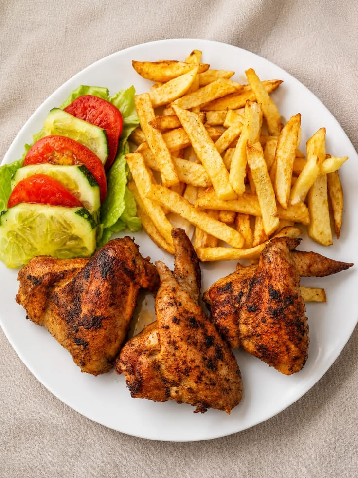
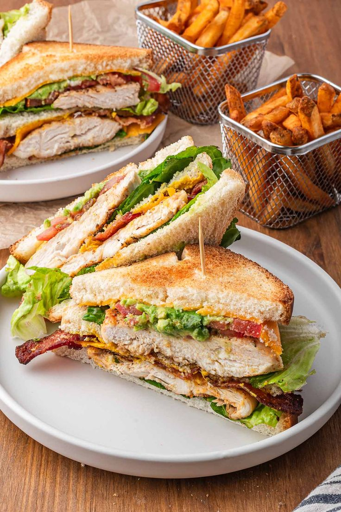

Nos Formations
Découvrez nos modules d'apprentissage pratiques conçus pour faire de vous des professionnels de la restauration.
Formation en Cuisine
Maîtrisez les bases de la gastronomie locale et internationale. De la découpe des légumes à la préparation de plats complexes, notre formation en cuisine vous offre toutes les clés pour exceller aux fourneaux.
✓ Hygiène et sécurité alimentaire
✓ Techniques de découpe et cuissons
✓ Plats traditionnels et revisités
✓ Dressage d'assiettes professionnel
Galerie des apprenants


Galerie des apprenants


Formation Pâtisserie
Plongez dans l'univers sucré de la pâtisserie. Apprenez à confectionner des entremets, tartes, viennoiseries et gâteaux d'exception avec précision et créativité.
✓ Les pâtes de base (brisée, sablée, feuilletée)
✓ Crèmes et ganaches
✓ Cake design et décoration
✓ Gestion des commandes